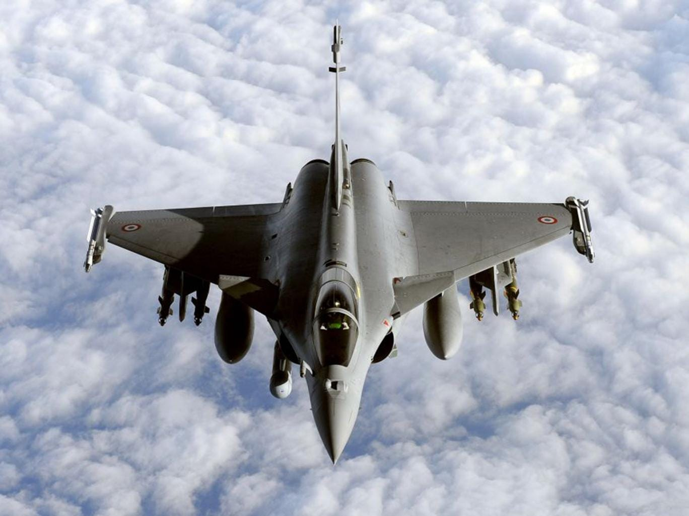
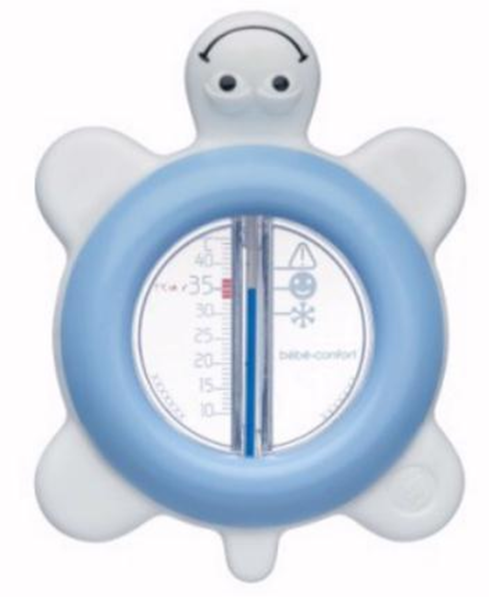
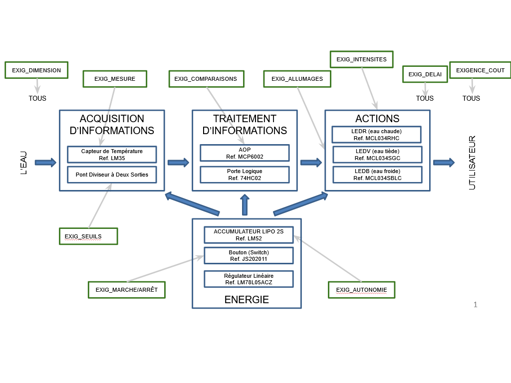
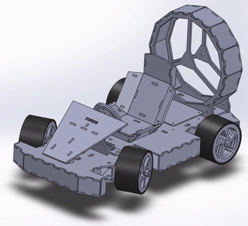
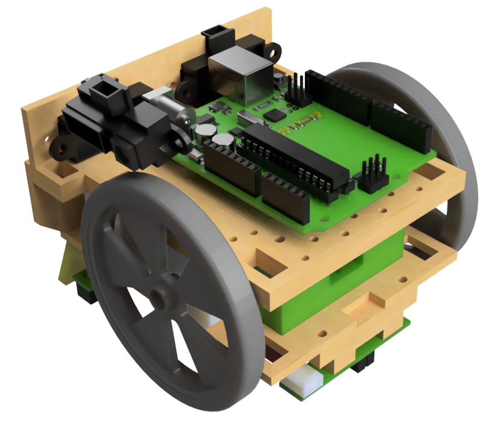
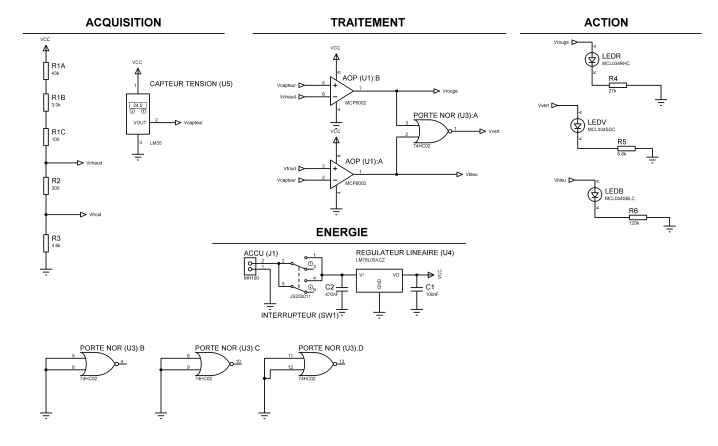
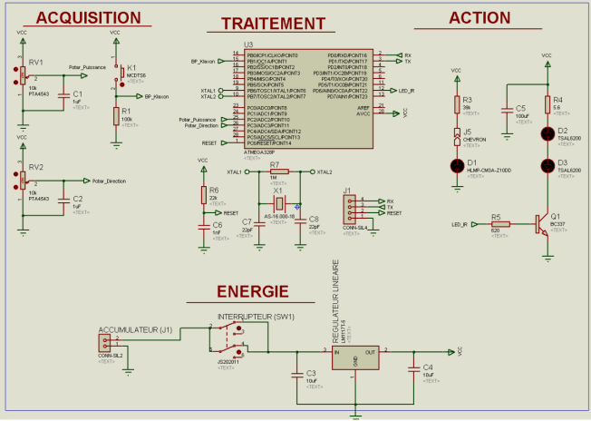

C1: J'identifie les fonctions demandées à la lecture du cahier des charges (architecture fonctionnelle - sans solution technique)

RAFALE
L'objectif du projet SLR (Système Sonore et Lumineux) est de développer un Système Sonore et Lumineux pour Rafale miniature.
Dans ce projet, j'ai réalisé une analyse architecturelle du produit à développer. Le synoptique architecturel comporte les 4 blocs d'un système du génie électrique : acquisition, traitement, action et énergie.
- L'interrupteur fait partie du bloc d'acquisition.
- Dans le bloc de traitement, le NE555 en configuration astable est associé à 2 résistances et 1 condensateur.
- Le transistor fait partie du bloc d'action avec les 3 LEDs associées à 5 résistances.
- Les 3 piles font partie du bloc énergie.

SAE Thermomètre De Bain
L'objectif est de concevoir un thermomètre de bain qui indique la température de l'eau par l'éclairage de LED de différentes couleurs qui s'allument ou non selon les critères suivants :
- LED bleue seule : détection d'une eau trop froide ( < 36°C )
- LED rouge seule : détection d'une eau trop chaude ( > 39°C )
- LED verte : détection d'une eau tiède
La carte doit avoir une autonomie plus de 24h de fonctionnement et un coût inférieur à 20 €.
En equipe nous avons identifié dans ce projet 4 blocs fonctionnels : acquisition, traitement, action et énergie.
Le bloc Acquisition contient la mesure de la température par à un capteur LM35 et la pont diviseur a deux sorties. Le bloc Traitement a une partie avec l'amplificateur operationnel en montage de comparateur a fenetre.

Le bloc Action regroupe les 3 LED : bleue, rouge et verte, qui s'allument dans les cas indiqués. Chacune d'elle est alimentée par un régulateur linéaire controlé par une des combinaison de AOP et porte logique.
Le bloc Energie comporte un accumulateur LiPo commuté par un interrupteur qui contrôle la mise en marche la carte et la regulateur linéaire.

SAE Kart à Hélice
L'objectif du projet KAH est de développer deux cartes : l’émetteur et le récepteur permettant de commander un kart.
Dans ce projet, j'ai réalisé une analyse architecturelle du l’émetteur.
- Bloc Energie : accumulateur avec autonomie de 60 minutes
- Bloc Acquisition : interfaces homme-machine + bouton poussoir
- Bloc Traitement : microcontrôleur + protocole infrarouge NEC
- Bloc Action : LEDs infrarouges + LED d’état
L’émetteur émet une trame (signal) avec période de 108 millisecondes. Mais si aucune commande ne change, la période est fixée à 333 millisecondes.


Robot Mini-Sumo
L’objectif du projet Sumo était de concevoir un robot mini-sumo capable de se déplacer de façon autonome, d’attaquer l’adversaire et de rester dans la zone de combat sans sortir du dohyo.
Dans ce projet, j’ai réalisé l’analyse fonctionnelle de la partie action, en identifiant les fonctions demandées à la lecture du cahier des charges, sans encore choisir les solutions techniques détaillées.
- Le robot doit avancer vers l’adversaire
- Le robot doit pouvoir tourner à gauche ou à droite
- Le robot doit pouvoir s’arrêter lorsque c’est nécessaire
- Le robot doit réagir aux informations issues des capteurs de sol et de détection d’adversaire

MUGOCHAUD
Dans le cadre de ce projet, j'ai identifié les fonctionnalités requises en examinant le cahier des charges, et j'ai défini le programme fonctionnel du système sans encore m'attarder sur le choix détaillé des solutions techniques.
En generale, on peut dire que le système MUGOCHAUD est organisé autour de blocs fonctionnels : acquisition, traitement, action et énergie. L’objectif global est de gérer automatiquement l’ouverture de la porte, la mise en sécurité, le verrouillage, le chauffage et l’affichage lumineux du cycle de fonctionnement.
- Acquisition : capteur inductif SN04N pour détecter la fermeture de la porte, bouton start/stop et capteur PT1000 pour la température
- Traitement : automate Siemens S7-1200 CPU 1215C, qui orchestre la séquence de fonctionnement
- Action : électro-aimant pour le verrouillage, deux résistances chauffantes 12Ω / 50W, et LED blanche
- Energie : alimentation 24 V DC distribuée vers l’armoire et les différents actionneurs

C2: Je propose une solution technique pour répondre à une fonction
Thermomètre De Bain
1. Afin de répondre à l'exigence de comparaisons du Cahier Des Charges :
- « Eau Froide » : information active si l'information « Température » mesurée est inférieure au seuil de température « Température Froide » sinon information inactive
- « Eau Tiède » : information active si l'information « Température » mesurée est simultanément supérieure au seuil de température « Température Froide » et inférieure au seuil de température « Température Chaude » sinon information inactive
- « Eau Chaude » : information active si l'information « Température » mesurée est supérieure au seuil de température « Température Chaude » sinon information inactive
j’ai choisi le montage de comparateur a fenêtre en utilisant AOP MCP 6002 et porte logique NOR 74HC02.
En resultat j'ai déterminé que :
- Si le signal capturé est supérieur à 0.39V +/-5%, on aura 5V en sortie de l’AOP U1 : B et 0V en sortie de l’AOP U1 : A - on allume la LED rouge
- Si signal capturé est inférieur à 0.36V +/-5%, on aura 5V en sortie de l’AOP U1 : A et 0V de la sortie de l'AOP U1 : B donc on allume la LED bleue
- Si on a 0.36V < signal capturé < 0.39V, on utilise une porte logique NOR pour allumer une LED verte
2. Pour répondre à l'exigence d’allumage du Cahier Des Charges :
- Voyant bleu allumé lorsque l'information « Eau Froide » est active sinon éteint
- Voyant vert allumé lorsque l'information « Eau Tiède » est active sinon éteint
- Voyant rouge allumé lorsque l'information « Eau Chaude » est active sinon éteint
J'ai exploité les formules et les graphiques de la datasheet pour trouver les valeurs des résistances. En appliquant la méthode de normalisation des valeurs de résistance j'ai retenu le dimensionnement final suivant : Rrouge = série E24 +-5% 27kΩ ; Rvert = E24 +-5% 6.8kΩ ; Rbleu = E24 +-5% 120kΩ.
3. Afin de répondre à l'exigence d’intensités (l'intensité lumineuse de chaque voyant est de 50 mcd (erreur de -/+10%) lorsque le voyant est allumé) du Cahier Des Charges j'ai réalisé les calculs pour trouver l’intensité du chaque LED et j’ai trouvé les valeurs suivantes : Irouge = 0,13mA (+/-10%) ; Ivert = 0,44mA (+/-10%) ; Ibleu = 0,022mA (+/-10%).
Ces solutions sont conforme aux tolérances mentionnées dans le cahier des charges.

Kart à Hélice
J'ai fait la conception technique de la carte émetteur. J’ai proposé plusieurs solutions pour répondre aux exigences.
1. Afin de répondre à l'exigence d'acquisition d'information sur les interfaces homme-machine, on choisit le deux potentiomètres linéaire PTA4543.
Pour d’éviter les problemes causés par le bruit créé par les mains humaines, j’ai ajouté un filtrage. Pour ça on a cherché la formule de fréquence de coupure et dimensionné un condensateur qui aide avec ce probleme.
Pour l’étage avec klaxon, on doit choisir une résistance et décider est que c’est type pull-up ou pull-down, ce qui simplifie la détection d’un appui.
2. Pour de répondre à l'exigence d’action sur les LEDs d’émission infrarouge, nous devrons faire l’étage avec transistor et utilise 2 résistances avec un condensateur. La raison est que LEDs besoin plus de courant de que le microcontrôleur peut fournir.
L’indicateur vert doit être connecter à la résistance pour limiter le courant.
Chaque étage a été simulé sous outil logiciel pour vérifier le fonctionnement attendu. Ces simulations nous ont permis de conformé les valeurs des composants et de corriger les erreurs avant l'étape de production.

Robot Mini-Sumo
Pour répondre à la fonction de déplacement, j’ai proposé une solution technique basée sur deux motoréducteurs GM3 commandés par un pont en H.
J'ai comparé deux solutions disponibles sur le stock : le DRV8835 et le DRV8833. Le choix du DRV8835 a été retenu car il répondait aux contraintes d’alimentation logique du microcontrôleur, à la tension batterie et au courant nécessaire pour entraîner les moteurs.
- Pont en H DRV8835 pour commander deux moteurs CC
- Adaptée à une logique 5 V côté Arduino
- Alimentation moteur compatible avec la batterie 7,4 V
- Courant de sortie suffisant pour les motoréducteurs GM3
J’ai également fait la programmation des fonctions de déplacement, notamment l’avance, le virage à gauche, le virage à droite et l’arrêt des moteurs.

MUGOCHAUD
Pour répondre aux fonctions du cahier des charges, j’ai proposé et justifié plusieurs solutions techniques au fonctionnement du système MUGOCHAUD.
La fermeture de porte est détectée à l’aide d’un capteur inductif, qui permet de distinguer l’état ouvert ou fermé de l’enceinte. La mesure de température est assurée par une sonde PT1000, intégrée dans la boucle de régulation.
L’automate Siemens S7-1200 CPU 1215C pilote l’ensemble du cycle de fonctionnement.
- Détection de porte : SN04N inductif, signal logique conforme à l’état mécanique de la porte
- Mesure de température : PT1000, utilisée comme capteur principal de régulation
- Action de verrouillage : électro-aimant commandé directement par l’automate.
- Action de chauffage : deux résistances HS50 12Ω / 50W en parallèle
- Traitement : automate Siemens S7-1200 avec programmation sous TIA Portal
C3: J'affine une solution technique en m'appuyant sur un maquettage numérique et/ou matériel
RAFALE
A partir du schéma électrique complet du SLR, j'ai rédigé la nomenclature et y associant le coût de chaque composant.
J'ai effectué le placement puis le routage du circuit imprimé. J'ai alors rédigé le DDF en intégrant à l'échelle le typon de la couche supérieure, le schéma d'implantation, le plan de perçage.
Thermomètre De Bain
A partir du schéma électrique complet du TDB, j'ai rédigé la nomenclature en y associant le coût de chaque composant.
En équipe j’ai effectué le placement de composants sur le circuit et le routage du circuit imprime. J’ai après rédige le dossier de fabrication en intégrant le typon de la couche supérieure, le schéma d'implantation, le plan de perçage.

Kart à Hélice
A partir du schéma électrique complet d’émetteur, j'ai rédigé la nomenclature en associant le coût des composants choisit d’étages sur lesquelles j’ai travaillé. Ce permis de vérifier la faisabilité économique du projet.
Avec coéquipiers j’ai effectué le placement des composants et le routage du circuit imprimé. Ca été fait à l’aide d’un outil logiciel specialisé. J’ai après rédige le dossier de fabrication en intégrant le typon de la couche supérieure, le schéma d'implantation, le plan de perçage et nomenclature complet.
Le protocole de fabrication utilise est décrit dans ma fiche de synthèse du HTUT 4 "Comment fabriquer une carte électronique".
Les documents obtenu sont les suivants :
- Document 1 et 2 : typons
- Document 3 : plan d'implantation
- Document 4 : schéma de perçage


Robot Mini-Sumo
J'ai travaillé sur le prototypage numérique de la section de commande, en m'appuyant sur les schémas des tableaux de connexion du pont et du circuit d'attaque du moteur, mais le tracé KiCad du shield a été réalisé par un autre binôme de notre équipe.
J’ai apres vérifié la cohérence entre le schéma électrique et l’implantation du pont en H et les connexions vers l’Arduino.
- Câblage du DRV8835 en mode IN/IN
- Contrôle de la correspondance entre les broches Arduino et les entrées du pont en H
- Validation des choix techniques avant la fabrication du prototype avec derisquage

MUGOCHAUD
Afin d’affiner la solution, j’ai travaillé sur le maquettage numérique et sur les documents de câblage nécessaires à la fabrication du système.
J’ai exploité la nomenclature générée, les schémas de connexion et la procédure de câblage pour vérifier la cohérence de l’implantation des composants, des alimentations et des liaisons entre l’enceinte et l’armoire.
Cette étape m’a permis de vérifier les longueurs de câbles, le positionnement des bornes, la répartition des entrées/sorties de l’automate et la faisabilité du montage avant la réalisation finale.
- Vérification des schémas de connexion alimentation/automate
- Contrôle du connection entre l’enceinte climatique et l’armoire électrique
- Préparation de la procédure de fabrication et de câblage


C4: Je rédige un dossier de conception et de fabrication
Kart à Hélice
Au cours de ce projet, j’ai effectué la rédaction du dossier de fabrication de la carte émetteur, à partir des documents obtenu pendant de la conception (schéma électrique, implantation, routage).
J’ai ensuite participé à l’assemblage d’émetteur. J'ai percé les trous pour les composants et les ai soudés. J'ai vérifié les valeurs et les directions des composants comme les résistances et les condensateurs. J'ai suivi le plan pendant la soudure.
Malheureusement, le transistor de stock choisi par mes coéquipiers ne correspondait pas à celui indiqué dans la nomenclature. Cela a posé problème lors de la vérification de la carte. Après avoir identifié le problème, on a remplacé le composant par le bon et terminé la vérification de la carte.
Ensuite, nous avons chargé le code écrit par une autre équipe travaillant sur le récepteur.

Legende de l'image d'emetteur
- 1 - Potentiometre de direction
- 2 - Potentiometre de la vitesse
- 3 - LEDs infrarouge
- 4 - place de microcontrolleur
- 5 - bouton-poussoir
- 6 - connecteur de telechargement de code
- 7 - interrupteur
- 8 - regulateur linéaire
- 9 - LED vert
- 10 - les condensateurs
- 11 - la resistance
- 12 - transistor
- 13 - quartz
Robot Mini-Sumo
J’ai contribué à la rédaction des documents nécessaires à la fabrication du prototype : nomenclature, schéma électrique, schéma d’implantation, plan de câblage et procédure de connection du pont en H.
- Rédaction des documents de conception pour la partie action
- Préparation des procedure de verificaiton du prototype

MUGOCHAUD
J’ai participé à la rédaction des dossiers de conception, de fabrication et de vérification, en m’appuyant sur les schémas fait, la nomenclature et le procedure de fabrication réalisé avec un algorithm de fonctionnement creé
- Rédaction et mise en forme du dossier de conception
- Rédaction du dossier de fabrication avec les procedure de fabrication
- Analyse des essais et validation de la conformité du système